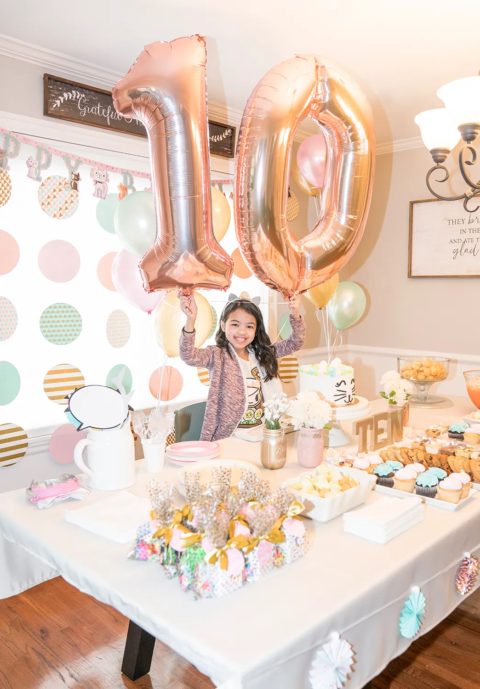

Home
Here are some birday ideas
its coming up to my 10th birthday and since its in winter I cant go to many places but i do have ideas for warmer times.
- Beach Party: I love a beach party. I've been to a few, and they were fun. They seem a little dull at the start, but in the end, they're really super cool because you are just in your bathing suit, and then your just jumping in and out, you can talk, sunbathe, and swim.
- Theme Party: I think it's a good idea to do this because if you choose something like your favorite flower or TV show, then decorate the atmosphere well, then it's as if you're in a movie.
- Sleepover party: I think it's really fun because it's like living with your friends for one night and an opportunity to stay up late.
- Surprise party: you can't ask for one but can make one for someone else. I always wanted one of these, but I never got one. I guess it's not under your control to get a surprise party.

(not me!)